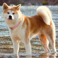

PetLovers
Menu
首页
论坛
百科

秋田犬
拉丁学名：Japanese Akita
别名：日本秋田犬
地区：日本
特征：柴犬的体型中等，肌肉厚实，四肢非常的发达，小小的身体灵活好动，一只公柴犬的标准身高是39.5公分。幼犬看起来非常的美，而且大，头顶三角形的耳朵稍稍向前倾，眼睛稍小呈椭圆形。秋田犬看起来巨大有力，一只公秋田犬的标准身高为66.7公分，它的头部呈三角形，眼睛小而圆，两耳直立，与后颈部在一条直线上，这是秋田犬的特征之一。
简 介
秋田犬的祖先犬是被称为“秋田玛塔吉”（秋田マタギ）的“玛塔吉犬”（マタギ犬，山地狩猎犬）。原本在日本犬中是不存在大型犬的，而秋田玛塔吉为中型的猎熊犬。江户时代出羽国北部的秋田地方被佐竹氏平定。佐竹氏是关原之战后被常陆国转封的旁系诸侯。在庆长年间的1630年（宽永7年）左右，为了培养提升藩士斗志而提供斗犬作为奖励，这些斗犬便是让猎犬与秋田地区的土犬进行交配后生育。此一犬种成为秋田犬的原种，但在当时的大馆、能带地区被称为“大馆犬”。 过去只有皇族和贵族才可以拥有秋田犬。在正式的仪式上，人们会宣布照顾和饲养秋田犬的正确方法。栓犬的皮带不同，代表秋田犬的等级和主人的地位不同。人们在谈及秋田犬的时候都用特定的称呼。每头秋田犬都有专人照料，这个人穿着与被照料的犬地位相当的华丽服饰。 由于当权者的喜好变化，对秋田犬的兴趣时高时低。在接下来的300年中，秋田犬几次面临绝种。幸运的是，人们对秋田犬的喜爱使得他们安然度过明治时代。20世纪初日本昭和年间，日本国内开始逐步禁止斗犬，秋田犬饲养量剧减，后经有人提倡保护而被誉为国犬。 1927年，日本着手保护纯种犬。1931年7月，日本政府将秋田犬定为国家的象征。在世界各地，它现在已经成为了家庭犬，并且受到了人们的喜欢。如今，一只刚出生的纯种小秋田犬，市场售价约为20万日元（约合12000元人民币）。 美国的秋田犬 海伦·凯勒（Helen Keller）是第一个将秋田犬带到美国的人。1937年，她访问日本时，教育大臣将一头两个月龄的小秋田犬送给她。后来这头犬死了，教育大臣又送给她另一头秋田犬。 秋田犬在美国的普及是在二战之后。这要归功于美国的军人们，他们非常喜爱这种聪明而且适应能力极强的犬。在战争结束后，军人们将秋田犬带回家乡饲养。美国的秋田犬俱乐部成立于1956年，1972年10月美国犬业俱乐部正式承认秋田犬，并于1973年4月3日起正式参加工作犬组的展出。
宠物情缘XXXXXXXXXXXXXXXXXXXXXXXXXXXXXXXXXXXXXXX